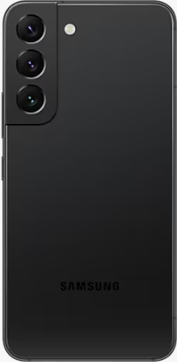
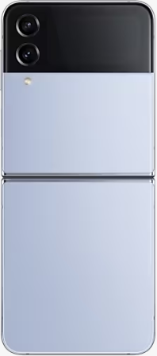
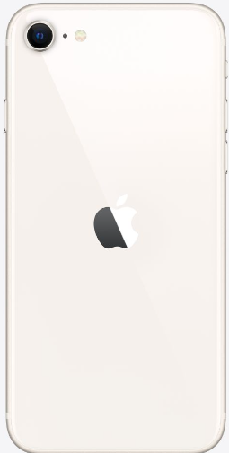
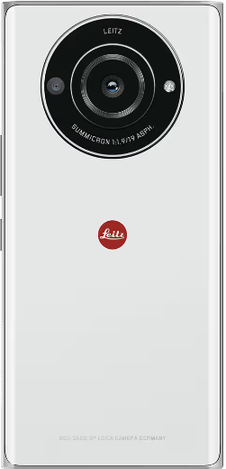

역사
최초의 스마트폰은 사이먼(symon)으로 추정된다.IBM사가 1992년에 설계하여 그 해에 미국 네바다 주의 라스베거스에서 열린 컴댁스에서 컨셉제품으로 전시되었다.
안드로이드
안드로이드는 휴대전화를 비롯한 휴대용 장치를 위한 운영 체제와 미들웨어,사용자 인터페이스 그리고 표준응용 프로그램(웹 브라우저, 이메일 클라이언트, 단문 메시지 서비스, 멀티미디어 메시지 서비스 등)을 포함하고 있는 소프트웨어 스택이자 모바일 운영체제이다.
아이폰
아이폰은 2007년 1월 9일 애플이 발표한 휴대전화 시리즈이다.미국 샌프란시스코에서 열린 맥월드 2007에서 애플의 창업자중 한명인 스티브 잡스가 발표했다.
샘플
| 스마트폰 샘플 | ||||
|  |  |  |
 |  |